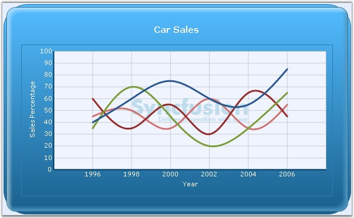

Essential Chart supports watermark feature using which we can show text, image, or both as watermark inside the chart area.
Below are the WaterMark properties with descriptions.
|
ChartAxis Properties |
Description |
|
Text |
Sets the watermark text. |
|
Image |
Used to display image as the watermark. |
|
Opacity |
Sets the opacity of the watermark. |
|
HorizontalAlign |
Sets watermark horizontally in the chart area. |
|
VerticalAlign |
Sets watermark vertically in the chart area. |
|
ZOrder |
Used to specify whether watermark should be shown on top of the chart. |
|
[C#]
this.ChartWebControl1.ChartArea.WaterMark.Text="Syncfusion Chart"; this.ChartWebControl1.ChartArea.Watermark.Image = System.Drawing.Image.FromFile("Logo.bmp"); this.ChartWebControl1.ChartArea.Watermark.Opacity=60; this.ChartWebControl1.ChartArea.Watermark.HorizontalAlignment=ChartAlignment.Near this.ChartWebControl1.ChartArea.Watermark.ZOrder=ChartWaterMarkOrder.Behind; |
|
[VB.NET]
Me.ChartWebControl1.ChartArea.WaterMark.Text="Syncfusion Chart" Me.ChartWebControl1.ChartArea.Watermark.Image = System.Drawing.Image.FromFile("Logo.bmp") Me.ChartWebControl1.ChartArea.Watermark.Opacity=60 Me.ChartWebControl1.ChartArea.Watermark.HorizontalAlignment=ChartAlignment.Near Me.ChartWebControl1.ChartArea.Watermark.ZOrder=ChartWaterMarkOrder.Behind; |

Figure 306: "Image" displayed as Watermark; Opacity=60; HorizontalAlignment="Near"; VerticalAlignment="Near"; ZOrder="Behind"
A sample which demonstrates the water mark feature is available in the following sample installation path.
<Install Location>\Syncfusion\EssentialStudio\Version Number\Web\chart.web\Samples\3.5\Chart Appearance\ChartWatermark